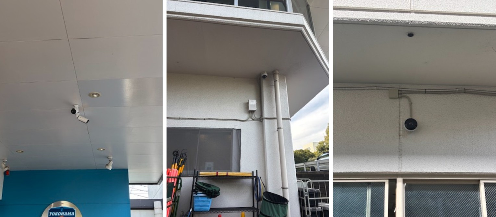

スポーツクラブ
横浜FC・LEOCトレーニングセンターにAIカメラを設置｜映像データの活用に向けた第一歩

・導入前の課題
多くの人が出入りする施設の安心・安全強化
株式会社横浜フリエスポーツクラブ様（横浜FC）のLEOCトレーニングセンター内のクラブハウスに、ハイブリッドクラウド型のAIカメラ「Verkada」を設置しました。
選手・スタッフ・アカデミー生・ファンの皆様など多くの方が立ち入る施設のため、さらなる安心・安全の強化に取り組むべく導入されました。
選手もアカデミー生も通う練習の拠点
横浜FC・LEOCトレーニングセンターは横浜市保土ケ谷区の西谷浄水場の中にある横浜FCの練習施設です。2010年7月に開設されました。
グラウンドのほかに体育館とクラブハウスがあり、クラブハウスには食堂・ロッカールーム・事務所などが入っています。
トップチームの選手からアカデミー生・スタッフまで多くの人が行き来し、地元の子ども向けのサッカー教室も開かれています。
導入前の課題
クラブハウスには選手・スタッフ・アカデミー生・ファンの方など多くの人が出入りします。
そのため、出入りや共用部の様子を記録し、何かあったときにすぐ確かめられる仕組みが求められていました。
下見で5か所を確かめて4台に絞る
2025年10月に現地を下見し、入口・体育館の入口と駐車場・用具や建物の内部へ続く通路・食堂とスタッフ詰所の5か所を確かめました。
翌日には配置の案をお出しし、映したい範囲と台数の兼ね合いを横浜FC様と詰めていきました。
最終的に人の出入りが集まる場所へ4台を置く構成とし、2026年1月に導入しています。
導入したもの
入口・駐車場・通路など人の出入りが集まる場所にAIカメラ4台を設置しました。
映像はクラウドに保存され、権限のある担当者がパソコンやスマートフォンから確かめられます。
| 設置した場所 | カメラ | 主に映すところ |
|---|---|---|
| 玄関の天井 | 屋外用バレットカメラ（4K）2台 | クラブハウスの入口と駐車場 |
| 建物の裏手（ロッカールーム側） | 屋外用ドームカメラ 1台 | 用具や建物の内部へ続く通路 |
| 食堂側 | 屋外用魚眼カメラ 1台 | 食堂側の屋外を180度で見渡す |
カメラ本体にも最大30日分の映像が残るため、録画機を置く必要がありません。
配線は各カメラまで配管に通し、LANケーブル1本で電源と通信をまかなっています。


防犯の記録がそのまま運営の材料になる
防犯カメラの映像は、何かあったときに見返すための記録にとどまりがちです。
今回のカメラは映像に映る人や車を見分けて記録します。
そのため「この時間帯に駐車場へ入った車」のような条件で映像を早送りせずに探せます。時間帯ごとの人の多さもつかめます。
防犯のために入れたカメラが、そのまま施設の運営を考えるためのデータの入口にもなります。
これから｜映像を施設の運営に生かす
カメラの映像は防犯だけでなく人の流れや施設の使われ方を知る手がかりにもなります。
たとえば時間帯ごとの出入りの多さや駐車場の混み具合、建物の周りの人の流れの偏りといったことです。
そこで当社は、これまで培ってきたAI・データ分析の知見を生かし、映像データの活用による施設運営の高度化や新たな価値創出の可能性について、横浜FC様とご一緒に検討してまいります。
なお、当社は2026年7月から横浜FCのオフィシャルパートナーを務めています（お知らせ）。
また、カメラの導入と保守はグループ会社の株式会社Hubotが担当しています。
人の出入りが多い施設の方へ
防犯の仕組みを見直しながら、映像の使い道も一緒に考えたいという施設は少なくありません。
当社では設置の下見から映像データの活用まで、グループ会社のHubotとともにお手伝いしています。
まずは今の困りごとやお持ちのカメラの状況をお聞かせください。